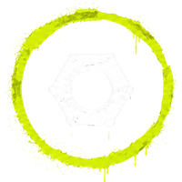

07
Iconografía
Set de 8 íconos propios en assets/icons/, todos PNG con fondo transparente.
icon-arrow.png

icon-restauracion.png
icon-level.pngicon-play.png
Biblioteca UX · Design System
Recursos de diseño extraídos del sitio real (index.html / styles.css): paleta de color, tipografía, espaciados, componentes, íconos y sistema responsive utilizados en el proyecto.
Definida como variables CSS en :root. Toda la web se apoya en siete colores — dos neutros de acento y cinco de base — sin colores "sueltos" fuera del sistema.
Dos familias con roles fijos: Bebas Neue para todo título (condensada, de alto impacto) y Lato para todo texto de lectura, botones y formularios.
Variables globales que controlan el ancho de contenido, la altura del header y el tamaño repetido de los íconos de servicios.
| Variable | Valor | Uso |
|---|---|---|
--container | 1240px | Ancho máximo de contenido en todas las secciones (igual que Materiales, Servicios, etc.) |
--nav-h | 81px (64px en mobile) | Altura del header fijo — usada también en scroll-padding-top para que el anclaje de menú no quede tapado |
--services-icon-size | 73px | Tamaño repetido de los 3 íconos de "Servicios que más realizamos" |
Dos variantes sobre una base compartida (.btn): sólido para la acción principal, contorno para acciones secundarias. Ambos suben 3px al pasar el mouse.
.btn.btn--primary — background:var(--green); color:#101000 · .btn.btn--outline — border 1px solid var(--green)
Patrón reutilizado en Cursos: superficie oscura con borde sutil, que se eleva 8px y tiñe el borde de verde al hacer hover.
Aprendé herramientas, maderas y procesos básicos.
📊 Nivel: Principiante🕐 6 semanas $120.000.course-card — background:#131313; border:1px solid rgba(255,255,255,.06); hover → translateY(-8px)
Inputs minimalistas: sin caja, solo una línea inferior que pasa a verde en foco. Usados en "Hablemos de tu próximo instrumento".
.contact__field — border-bottom:1px solid rgba(255,255,255,.25) → :focus border-color:var(--green)
Set de 8 íconos propios en assets/icons/, todos PNG con fondo transparente.

icon-restauracion.png
icon-level.pngMobile-first en la composición visual, pero implementado con media queries "desktop-down". Breakpoints reales usados en el archivo, de mayor a menor.
Animación con GSAP + ScrollTrigger (reveals al hacer scroll) y Lenis (scroll suave), respetando prefers-reduced-motion en toda la web.